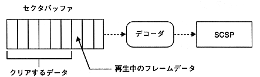

Return to previous page ｜ Return to menu ｜ Go to next page
-
(2) For audio
- (a) Clear target

Figure 7.2 MPEG audio buffer configuration
(b) Clear timing
- Clear immediately.
- Clear in sync with video clear.
Return to previous page ｜ Return to menu ｜ Go to next page